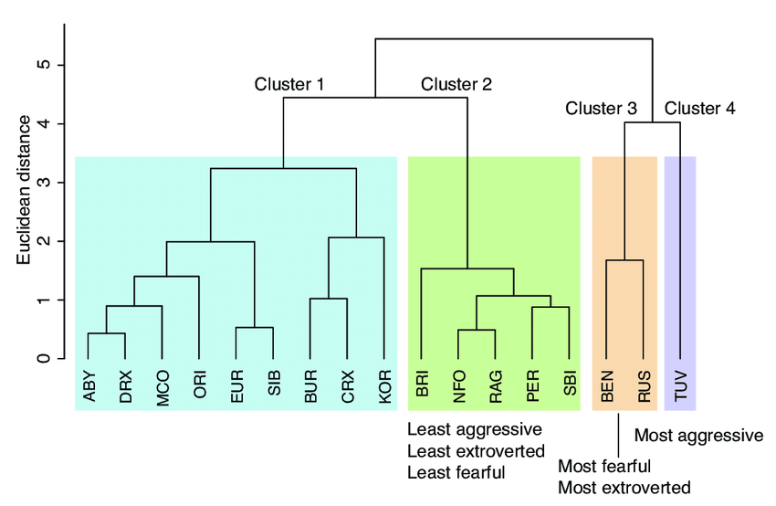

Clustering
When to Use
when wanting to sort data into groups and/or identify characteristics of the different groups
Key Points
Supervised: clustering where there is initial knowledge about the clusters, typically form a training set
Unsupervised: clustering that is done straight on the data whhere there is no initial defined clusters
Centroid: average or center point within a cluster
Soft Clustering: data point may belong to multiple clusters with associated probabilities
Hard Clustering: data point belongs to a single cluster
Techniques
Dendrogram:
shows the hierarchical relationship between data points
Defining Distance:
Single Linkage: smallest distance between two points in different clusters is used
Average Linkage: average distance between all the points is used
Complete Linkage: smallest maximum distance between two points in different clusters is used
Dendrogram for Cat Breeds
K-Means:
uses centroids to sort data into a predetermined k number of groups
assign points to clusters based on distance from k seed points and repeat until convergence
DBSCAN: Density-Based Spatial Clustering of Applications with Noise
everyone's favorite
removes background noise: not all points have to be assigned to a cluster
2 parameters: vector distance ε and number of data points μ
Core Point: data points that meet the criteria
Each core point is assigned a cluster
core points and non-core points within ε of the cluster are added to the cluster
all core points will be assigned to a group
K-nn:
assign points to already known clusters
use k nearest neighbor
the cluster with the most nearest neighbors is the cluster the point is assigned to
use misclassifation graphs to asses how well the classifcation is doing: want most data on the diagonal
Gaussian Mixture Model:
gives the probability that a point is in a cluster
a Gaussian is fit over each cluster
an estimate of k and cluster locations is giving
LDA: Linear Discriminant Analysis
tries to maximize separability of data
uses x and y data to find a new axes that separates the data best